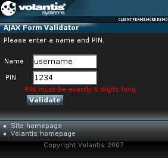

The Multiple Forms Validator widget checks that the values in multiple fields, taken together, meet some specified constraints. Please see Validating a form to learn about validation of a single form field.

<xf:input ref="name" id="name"> <xf:label>Name</xf:label> </xf:input>
<widget:multiple-validator id="myValidator" class="validable"> <widget:field ref="name" message-area="formMessage1"/> <widget:field ref="pin" message-area="formMessage2"/> <widget:validate message-area="formMessage" src="service/validator"/> </widget:multiple-validator>
<span id="formMessage1" class="error" style="mcs-container: 'message1'"/>
<span id="formMessage" class="error" style="mcs-container: 'message'"/>
<widget:button id="formButton" action="validate-script#invoke"> Validate</widget:button>
<widget:script id="validate-script">
$W('myValidator').addSuccessCallback(function(){
$W('formMsgSuccess').setContent("Validation succeeded.")});
$W('myValidator').addFailureCallback(function(){
$W('formMsgSuccess').setContent("")});
$W('myValidator').validate()
</widget:script>
<widget:display id="formMsgSuccess" style="mcs-container: 'msgSuccess'"/>
<response:response xmlns="http://www.w3.org/2002/06/xhtml2"
xmlns:mcs="http://www.volantis.com/xmlns/2006/01/xdime/mcs"
xmlns:response="http://www.volantis.com/xmlns/2006/05/widget/response">
<response:head>
<response:link rel="mcs:theme" href="/main.mthm"/>
</response:head>
<response:body>
<response:validation result="failed">
<response:message>Validation failed</response:message>
<response:field ref="pin">
<response:message>PIN must be exactly 6 digits long</response:message>
</response:field>
<response:field ref="name">
<response:message>Name must be at least 4 characters long</response:message>
</response:field>
</response:validation>
</response:body>
</response:response>
<response:response xmlns="http://www.w3.org/2002/06/xhtml2"
xmlns:mcs="http://www.volantis.com/xmlns/2006/01/xdime/mcs"
xmlns:response="http://www.volantis.com/xmlns/2006/05/widget/response">
<response:head>
<response:link rel="mcs:theme" href="/main.mthm"/>
</response:head>
<response:body>
<response:validation result="passed"/>
</response:body>
</response:response>
<?xml version="1.0" encoding="UTF-8"?>
<html xmlns="http://www.w3.org/2002/06/xhtml2"
xmlns:mcs="http://www.volantis.com/xmlns/2006/01/xdime/mcs"
xmlns:template="http://www.volantis.com/xmlns/marlin-template"
xmlns:widget="http://www.volantis.com/xmlns/2006/05/widget"
xmlns:urid="http://www.volantis.com/xmlns/marlin-uri-driver"
xmlns:xf="http://www.w3.org/2002/xforms"
xmlns:si="http://www.volantis.com/xmlns/2006/01/xdime2/si"
xmlns:event="http://www.w3.org/2001/xml-events">
<head>
<title>AJAX Form Validator</title>
<link rel="mcs:theme" href="/themes/main.mthm"/>
<link rel="mcs:theme" href="/themes/validator.mthm"/>
<link rel="mcs:layout" href="/layouts/main.mlyt"/>
<xf:model>
<xf:instance>
<si:instance>
<si:item name="name"/>
<si:item name="pin"/>
</si:instance>
</xf:instance>
<xf:submission id="submit" action="."/>
</xf:model>
<widget:script id="validate-script">
$W('myValidator').addSuccessCallback(function(){
$W('formMsgSuccess').setContent("Validation succeeded.")});
$W('myValidator').addFailureCallback(function(){
$W('formMsgSuccess').setContent("")});
$W('myValidator').validate()
</widget:script>
</head>
<body id="body">
<template:apply href="templates/demo-main.xdtpl">
<template:binding name="title" value="AJAX Form Validator"/>
<template:binding name="content">
<template:complexValue> Please enter a name and PIN. <div
style="mcs-layout: 'layouts/validator.mlyt';">
<widget:display id="formMsgSuccess" style="mcs-container: 'msgSuccess'"/>
<span id="formMessage" class="error" style="mcs-container: 'message'"/>
<xf:input ref="name" id="name" style="mcs-container: 'input1'">
<xf:label style="mcs-container: 'text1'">Name</xf:label>
</xf:input>
<span id="formMessage1" class="error" style="mcs-container: 'message1'"/>
<xf:input ref="pin" id="pin" style="mcs-container: 'input2'">
<xf:label style="mcs-container: 'text2'">PIN</xf:label>
</xf:input>
<span id="formMessage2" class="error" style="mcs-container: 'message2'"/>
<widget:button id="formButton" action="validate-script#invoke"
style="mcs-container: 'button'">Validate</widget:button>
</div>
<widget:multiple-validator id="myValidator" class="validable">
<widget:field ref="name" message-area="formMessage1"/>
<widget:field ref="pin" message-area="formMessage2"/>
<widget:validate message-area="formMessage" src="service/validator"/>
</widget:multiple-validator>
</template:complexValue>
</template:binding>
</template:apply>
</body>
</html>| Name | Purpose |
|---|---|
| div | A section used to add extra structure to documents. Style sheets can be used to control the presentation. |
| response:field | Indicates an error on an XForms control for a Multiple Validator widget by a reference to it. |
| response:message | The message displayed when a particular type of error occurs. Used by the Multiple Forms Validator widget. If enclosed directly within the response:validation element, it describes an overall validation failure. If contained by the response:field element, it describes a field-specific validation failure. |
| response:validation | Returns the result of validation. It is used by Multiple Forms Validator widget. |
| si:instance | Container for data items used to supply initial values for forms controls, or to provide additional data to be submitted with the form. |
| si:item | Defines an item of instance data that is required if a form control needs to be initialized, or when data not associated with a form control needs to be provided during form submission. |
| span | Inline element used to set a style. |
| widget:button | A general purpose element, used by widgets which need a button-like control. |
| widget:display | An inline widget element used to display some text content. It may be associated with a widget property. In such cases, the displayed content represents the value of the selected property. |
| widget:field | A reference in a Multiple Forms Validator widget to a single XForm control that is validated as part of the group. |
| widget:multiple-validator | The main element for a Multiple Forms Validator widget. |
| widget:script | Contains a script that can be executed by the invoke action. |
| widget:validate | Enables form validation in both the Simple and Multiple Forms Validator widgets. |
| xf:group | Combines a set of form controls into a user interface component. By applying theme properties on this element, you can control where form fragmentation occurs, and define or override at runtime the link texts specified on form fragment layouts. |
| xf:input | A form control for text input. |
| xf:instance | Optional element that contains instance data associated with the model element. It is used to supply initial values for forms controls, or to provide additional data to be submitted with the form. |
| xf:label | Provides a descriptive label for forms controls. |
| xf:model | Represents a form definition, used as a container for elements associated with its submission. |
| xf:submission | Defines the information to submit, where it should be sent, and how to send it. |
| Core attributes | Attributes that are common to XDIME 2 elements. |